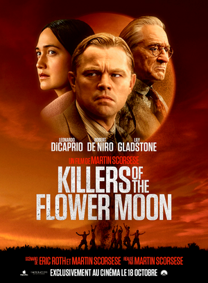

Top 10 des films
-

1. Babylon (2022)
3 h 09 min. Sortie : 18 janvier 2023 (France). Comédie dramatique, Historique
Film de Damien Chazelle
Aussi présent dans :
- Les films les plus attendus de 2023
- Les meilleurs films avec Margot Robbie
- Les meilleurs films avec Eric Roberts
- Les meilleurs films avec Tobey Maguire
- Les meilleurs films avec Olivia Wilde
- Les meilleurs films sur le cinéma
- Les meilleurs plans-séquences du cinéma
- Les meilleurs films sur le pouvoir et l'ambition
- Les meilleurs films de plus de trois heures
- Les meilleures scènes de danse dans un film
- Les meilleurs films choraux
-
2. Anatomie d'une chute (2023)
2 h 30 min. Sortie : 23 août 2023. Drame, Policier, Thriller
Film de Justine Triet
Aussi présent dans :
- Festival de Cannes 2023
- Les meilleurs films français de 2023
- Les meilleurs films avec Swann Arlaud
- Les meilleurs films sur le système judiciaire
- Les meilleurs films réalisés par des femmes
- Les meilleures Palmes d'or
-
3. Oppenheimer (2023)
3 h. Sortie : 19 juillet 2023 (France). Biopic, Drame, Historique
Film de Christopher Nolan
Aussi présent dans :
- Les films les plus attendus de 2023
- Les meilleurs biopics de scientifiques
- Les meilleurs films avec Rami Malek
- Les meilleurs films avec Jason Clarke
- Les meilleurs films avec Josh Hartnett
- Les meilleurs films avec Emily Blunt
- Les meilleurs films avec Cillian Murphy
- Les meilleurs films avec Kenneth Branagh
- Les meilleurs films avec Robert Downey Jr.
- Les meilleurs films avec Casey Affleck
- Les meilleurs films avec un personnage intelligent
-
4. Spider-Man: Across the Spider-Verse (2023)
2 h 20 min. Sortie : 31 mai 2023 (France). Action, Aventure, Science-fiction
Long-métrage d'animation de Joaquim Dos Santos, Kemp Powers et Justin K. Thompson
-
5. The French Dispatch (2021)
1 h 48 min. Sortie : 26 octobre 2021 (France). Comédie dramatique
Film de Wes Anderson
Aussi présent dans :
- Les meilleurs films de 2021
- Les meilleurs films avec Timothée Chalamet
- Les meilleurs films avec Saoirse Ronan
- Les meilleurs films avec Bill Murray
- Les meilleurs films avec Tilda Swinton
- Les meilleurs films avec Frances McDormand
- Les meilleurs films avec Adrien Brody
- Les meilleurs films avec Léa Seydoux
- Les meilleurs films inspirés de faits réels
- Les meilleurs films d'époque
-
 6. Dune (2021)
2 h 35 min. Sortie : 15 septembre 2021 (France). Science-fiction, Aventure
Film de Denis Villeneuve
Aussi présent dans :
- Les meilleurs films de 2021
- Les meilleurs films avec Timothée Chalamet
- Les meilleurs films avec Zendaya
- Les meilleurs films avec Rebecca Ferguson
- Les meilleurs films avec Oscar Isaac
- Les meilleurs films avec Josh Brolin
- Les meilleurs films avec Jason Momoa
- Les meilleurs films avec Javier Bardem
- Les meilleurs films de science-fiction
- Les meilleurs films d'aventure
-
7. No Time to Die (2021)
2 h 43 min. Sortie : 30 septembre 2021 (France). Action, Espionnage
Film de Cary Joji Fukunaga
Aussi présent dans :
- Les meilleurs films de 2021
- Les meilleurs films avec Daniel Craig
- Les meilleurs films avec Rami Malek
- Les meilleurs films avec Léa Seydoux
- Les meilleurs films avec Christoph Waltz
- Les meilleurs films avec Ralph Fiennes
- Les meilleurs films avec Ana de Armas
- Les meilleurs films d'espionnage
- Les meilleurs films d'action
-
8. The Power of the Dog (2021)
2 h 06 min. Sortie : 1er décembre 2021 (France). Drame, Western
Film de Jane Campion
Aussi présent dans :
- Les meilleurs films de 2021
- Les meilleurs films avec Benedict Cumberbatch
- Les meilleurs films avec Kirsten Dunst
- Les meilleurs films avec Jesse Plemons
- Lesmeilleurs films avec Kodi Smit-McPhee
- Les meilleurs films avec Thomasin McKenzie
- Les meilleurs films de Jane Campion
- Les meilleurs films de western
- Les meilleurs films dramatiques
-
9. Titane (2021)
1 h 48 min. Sortie : 14 juillet 2021 (France). Drame, Fantastique, Horreur
Film de Julia Ducournau
Aussi présent dans :
- Les meilleurs films de 2021
- Les meilleurs films français de 2021
- Les meilleurs films avec Vincent Lindon
- Les meilleurs films avec Agathe Rousselle
- Les meilleurs films de genre
- Les meilleurs films fantastiques
- Les meilleurs films d'horreur
-
10. Drive My Car (2021)
3 h 59 min. Sortie : 19 mai 2021 (France). Drame
Film de Ryusuke Hamaguchi
Aussi présent dans :
- Les meilleurs films de 2021
- Les meilleurs films japonais de 2021
- Les meilleurs films avec Hidetoshi Nishijima
- Les meilleurs films avec Tôko Miura
- Les meilleurs films avec Masaki Okada
- Les meilleurs films avec Reika Kirishima
- Les meilleurs films de Ryusuke Hamaguchi
- Les meilleurs films longs
- Les meilleurs films dramatiques